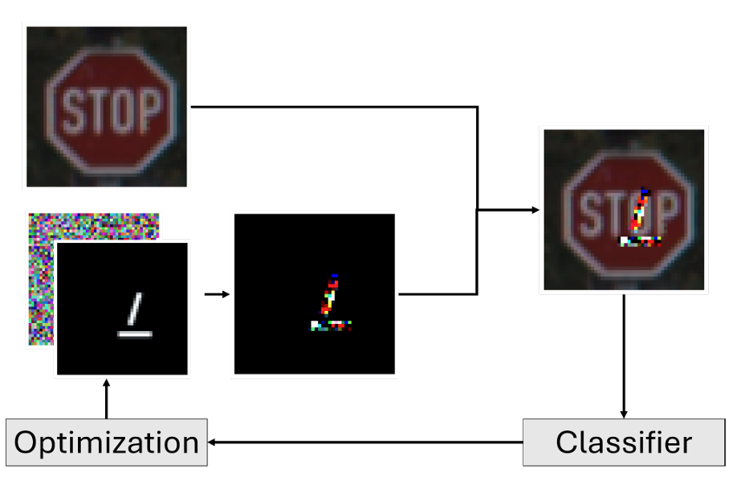

Project
Reproducing a physical patch attack (RP2) against CNN/ResNet models on GTSRB/LISA datasets. Evaluating the defenses provided via augmentation and adversarial training.
Figure: Traffic sign under attack, Generated label for attack & Traffic sign with physical perturbation sticker.
Figure: RP2 Attack Pipeline.
We study robustness of traffic sign recognition models to physical patch attacks, where a small printed pattern is affixed to a sign to induce misclassification in the wild. Using GTSRB and LISA datasets, we implement an RP2-style white-box attack targeting CNN/ResNet-18 models, measure attack success rate (ASR) under varying conditions, and evaluate defenses including input-space augmentation and adversarial training. Results highlight significant vulnerability of unprotected models and the partial mitigation offered by robust training protocols.
White-box access during patch optimization; physical-world patch application at inference. Objective: targeted misclassification to a chosen label while constraining patch area and printable color range.
Baseline CNN and ResNet‑18 classifiers trained on GTSRB; cross-checked on LISA for transferability. Standard train/val/test splits with normalization and resizing to model input.
On unprotected models, targeted patches achieve high attack success rate (ASR) with a notable drop in top‑1 accuracy on patched inputs. Robust training reduces ASR and narrows the clean‑robust gap.